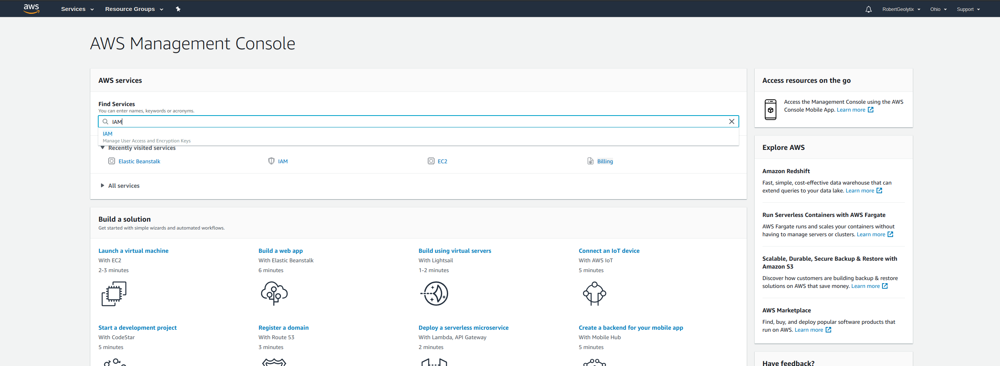
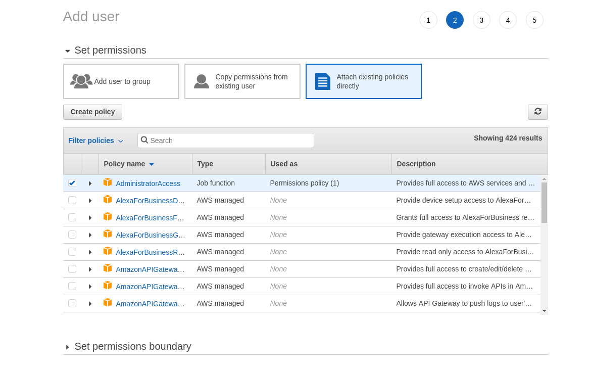
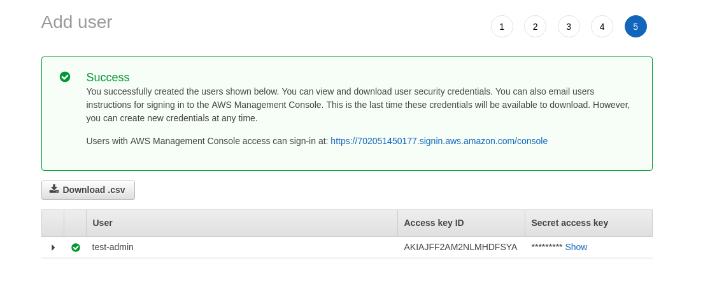
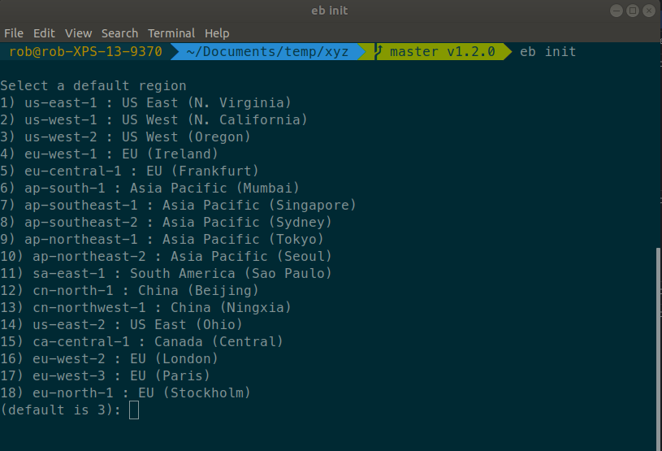
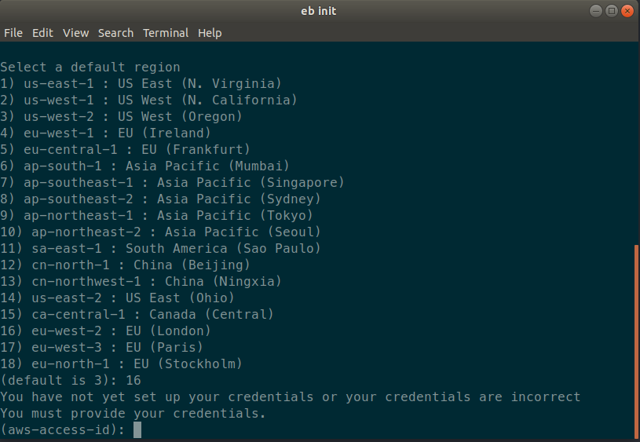

Deploying on AWS (Elastic Beanstalk)
The first requirement will be to become an AWS customer, if you are not already signed up follow the following link to Sign up.
The next step will be to install the Elastic Beanstalk Command Line Interface (EB CLI). There are different requirments for various operating systems. The following will provide you with an overview specific to your environment.
Another requirement before deploying will be to create AWS access keys to your AWS resources. Log into the AWS Console, and seach under find services for 'IAM'.

Navigate to the 'Users' and then select 'Add User'

Provide a username and give the user the access type of 'Programmatic access', hit next.
The next step will be to attach a Policy to the User. The Policy that we are going to attach will be the 'AdministratorAccess' . Hit next once complete. Skip the add tags section. And then hit Create User


Once the user is created the Access Key ID and Secret Access Key will be available for use.

Keep these keys on hand, as we will need them later on to configure the CLI.
To ensure that you have installed EB CLI correctly run the following : eb --version

Next navigate to the directory of the XYZ application that is ready for deployment. Once at the root directory we need to initiate a EB CLI configuration. eb init
The first setting for the deployment will be to select a region, where the application will be deployed.

The next step will be to set the aws-access-id and secret.

The Next step will to select a current application or create a new application. The next setting will be to make use of CodeCommit. This will depend on whether or not you make use of this.
The next step will be to create a .ebignore file that will upload only files that are not ignored, similar to a .gitignore. Create this in the root of your application.
Use the following in the .ebignore
.idea/
.vscode/
.env
.DS_Store
.sass-cache/
.git
node_modules
public/css/.sass-cache/
The next step is to define the instance environment properties. These will differ from instance to instance. These settings need to go into a directory called .ebextensions create a file with the *.config extension. This file is what AWS will read to create environment properties that are crucial to the XYZ framework. The configuration makes use of YAML.
option_settings:
- option_name: DIR
value: /test
- option_name: ALIAS
value: geolytix.xyz
- option_name: PRIVATE
value:
- option_name: SECRET
value:
- option_name: TRANSPORT
value:
- option_name: WORKSPACE
value:
- option_name: DBS_XYZ
value:
- option_name: CLOUDINARY
value:
- option_name: KEY_GOOGLE
value:
- option_name: KEY_HERE
value:
- option_name: KEY_MAPBOX
value: option_name: LOG_LEVEL
value: info
Once created, we are ready to deploy. To create an instance use the following command eb create {name_of_instance}
If all goes well, then once the process is complete you can open exacly what you just deployed with the command eb open
For future deployments, you would make use of the command eb deploy {name_of_instance}